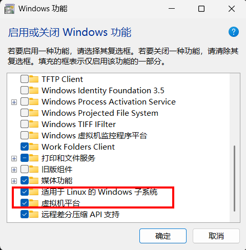

安装 WSL（Ubuntu 20.04）
1. 一键安装（推荐）
前提：Windows 10 版本 2004+ 或 Windows 11。
打开「控制面板 → 程序 → 启用或关闭 Windows 功能」，勾选「适用于 Linux 的 Windows 子系统」和「虚拟机平台」两项，点击「确定」，完成后按提示重启电脑。

打开cmd
按'win+R'输入'cmd'
执行安装命令
wsl --install -d Ubuntu-20.04
Ubuntu-20.04 里的 20.04 是发行版版本号，可按需替换；该命令需要下载并安装完整系统，耗时较长。
设置 Linux 用户名和密码。
注意：密码输入时不显示任何字符，盲打回车即可
安装后更新软件源
sudo apt update && sudo apt upgrade
2. 删除 WSL
1. 彻底清除 WSL
第一步：注销所有发行版。先用 wsl --list --verbose（可简写为 wsl -l -v）查看已安装的发行版名称，再逐个注销：
wsl --unregister <发行版名>
第二步：卸载 WSL 组件
wsl --uninstall